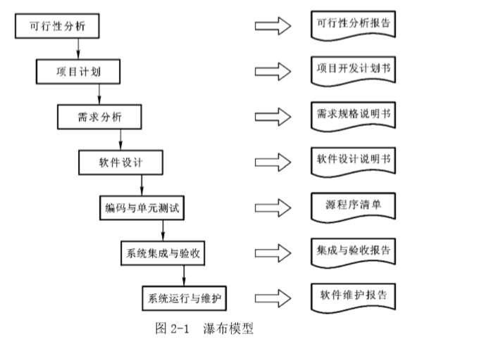
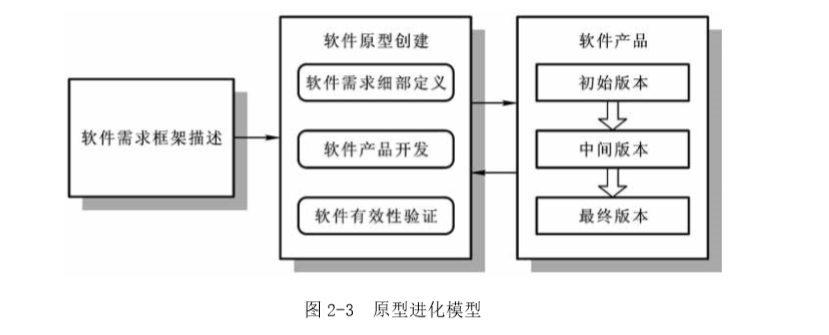
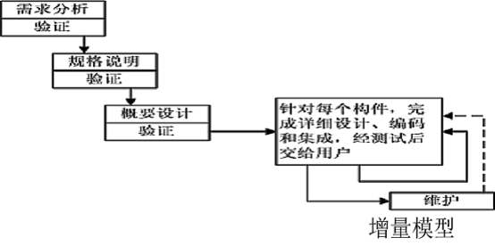
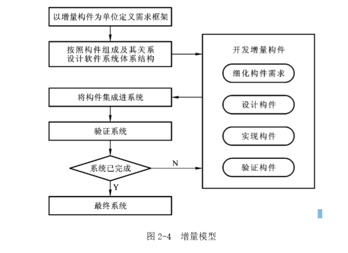
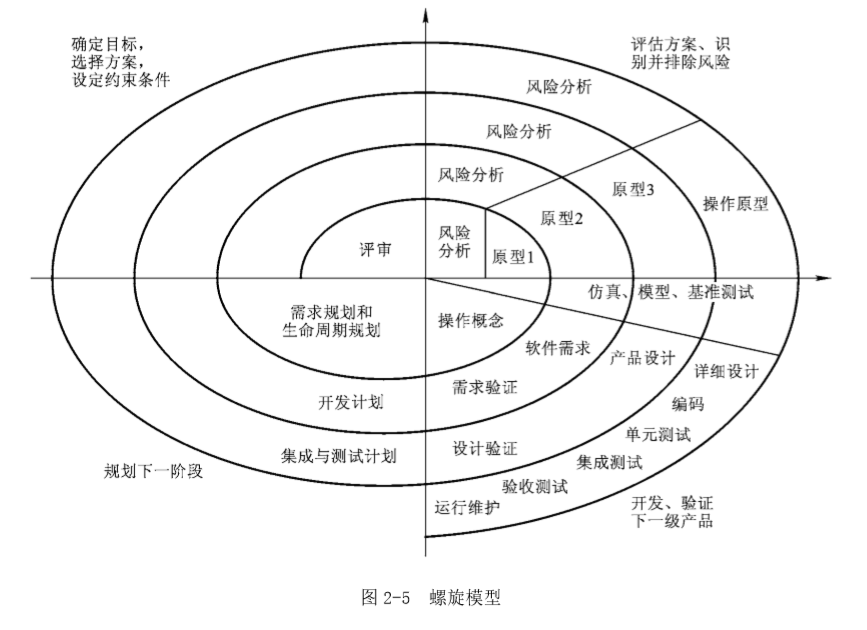
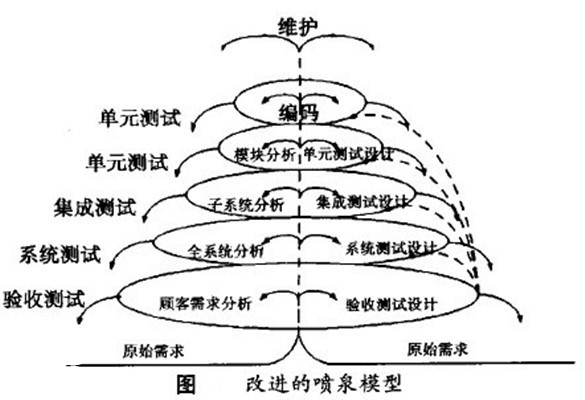
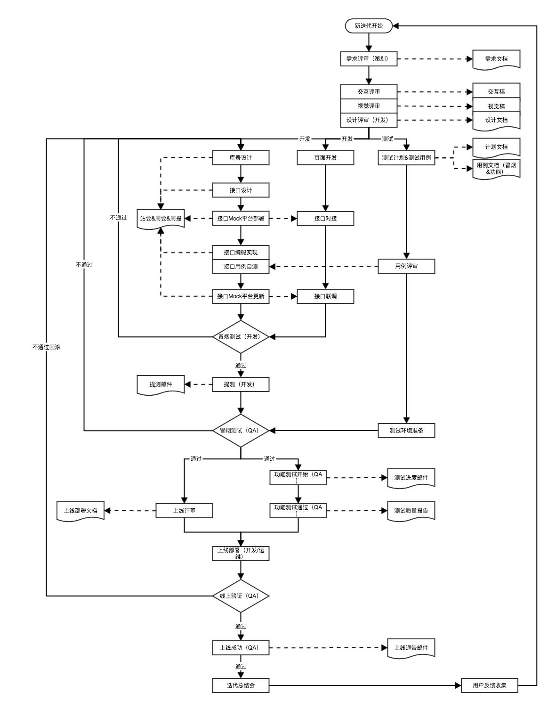

软件开发过程模型
瀑布模型（Waterfall Model）
瀑布模型（经典生命模型）提出了软件开发的系统化的、顺序的方法。其流程从用户需求规格说明开始，通过策划、建模、构建和部署过程，最终提供一个完整的软件并提供持续的技术支持。

模型特点
- 必须等前一阶段的工作完成之后，才能开始后一段的工作。
- 每一阶段都必须完成规定的文档，没有交出合格的文档就是没有完成该阶段的任务。
- 前一阶段的输出文档就是后一阶段的输入文档，因此，只有前一阶段的输出文档正确，后一阶段的工作才能得到正确的结果。
- 每个阶段结束前都要对所完成的文档进行评审，以便及早发现问题，改正错误。事实上越是早期阶段犯下的错误，暴露出来的时间就越晚，排除故障改正错误所需付出的代价也越高。因此，及时审查，是保证软件质量，降低软件成本的重要措施。
模型优点
- 强调了开发的阶段性，各阶段具有顺序性和依赖性
- 强调早期调研和需求分析，推迟编码实现的观点
- 提供了一个模板，这个模板使得分析、设计、编码、测试和支持的方法可以在该模板下有一个共同的指导。
模型局限
- 瀑布模型是一种线性模型，要求项目严格按规程推进，必须等到所有开发工作全部完成以后才能获得可以交付的软件产品。不能对软件系统进行快速创建，对于一些急于交付的软件系统的开发很不方便。
- 瀑布模型适合于需求明确，且无大的需求变更的软件开发（编译系统、操作系统等）。而对于分析初期需求模糊的项目，瀑布模型也并不适合。
适用场景
适用于需求确定，无大的需求变更，工作能够采用线性的方式完成的软件。
演化模型（Evolutionary Model）
快速原型（Rapid Prototype）
软件开发过程中，开发初期很难得到一个完整的、准确的需求规格说明，开发者往往对要解决的应用问题模糊不清，以至于形成的需求规格说明常常是不完整的、不准确的，有时甚至是有歧义的。此外，在整个开发过程中，用户可能会产生新的要求，导致需求的变更。为了适应这种需求的不确定性和变化，于是出现了快速原型（Rapid Prototype）开发方法。
模型特点
- 快速原型是用来获取用户需求的，或是用来试探设计是否有效的。一旦需求或设计确定下来了，原型就将被抛弃。因此，快速原型要求快速构件、容易修改，以节约原型创建的成本、加快开发速度。
- 快速原型是暂时适用使用的，因此并不要求完整。它往往针对某个局部问题建立专门原型，如界面原型、工作流原型等。
- 快速原型不能贯穿软件的整个生命周期，它需要和其他的过程模型相结合才能产生作用。例如，在瀑布模型中应用快速原型，以解决瀑布模型在需求分析时期存在的不足。
模型优点
- 能渐进地启发客户提出新的要求或任务，促使开发人员和用户达成共识。
- 减少了开发风险，避免了因为需求不确定而在开发过程中浪费了大量的资源。
模型局限
- 没有考虑到软件的整体和长期的可维护性。
- 可能由于达不到质量要求而导致产品被抛弃，从而采用新的模型重新设计。
适用场景
原型方法比较适用于用户需求不清、需求经常变化的情况。当系统规模不是很大也不太复杂时，采用该方法比较好。
原型进化（ Prototype Evolution）
原型进化对开发过程的考虑是，针对有待开发的软件系统，先开发一个原型系统给用户使用，然后根据用户使用情况的意见反馈，对原型系统不断修改，使它逐步接近并最终到达开发目标。跟快速原型不同的是，快速原型在完成需求定义后将被抛弃，而原型进化所要创建的原型则是一个今后将要投入应用的系统，只是所创建的原型系统在功能、性能等方面还有许多不 足，还没有达到最终开发目标，需要不断改进。 原型进化的工作流程如图 2-3 所示。

从图中可以看到，它具有以下两个特点：
- 原型进化模型将软件的需求细部定义、产品开发和有效性验证放在同一个工作进程中交替或并行运作。因此，在获得了软件需求框架以后，例如软件的基本功能被确定以后，就可以直接进入到对软件的开发中。
- 原型进化模型是通过不断发布新的软件版本而使软件逐步完善的，因此，这种开发模式特别适合于那些用户急需的软件产品开发。它能够快速地向用户交付可以投入实际运行的软件成果，并能够很好地适应软件用户对需求规格的变更。 原型进化模型能够适应软件需求的中途变更，但在应用的时候，以下问题需要得到足够的重视：
- 原型进化模型虽说使开发进程加快了，但不能像瀑布模型那样提供明确的里程碑管理，随着开发过程中版本的快速更新，项目管理、软件配置管理会变得复杂起来，管理者难以把握开发进度。因此，对于大型软件项目，原型进化模型缺乏有效的管理规程。
- 开发过程中软件版本的快速变更，还可能损伤软件的内部结构，使其缺乏整体性和稳定性。另外，用于反映软件版本变更的文档也有可能跟不上软件的变更速度。这些问题必将影响到今后软件的维护。
增量模型（Incremental Model）
增量模型融合了瀑布模型的基本成分和原型进化模型的迭代特征，它对软件过程的考虑是：在整体上按照瀑布模型的流程实施项目开发，以方便对项目的管理；但在软件的实际开发中，则将软件系统按功能分解为许多增减构件，并以构件为单位逐个地创建与交付，直到全部增量构件创建完成，并都被集成到系统之中交付用户使用。


模型特点
- 当使用增量模型时，第一个增量往往是核心的产品。
- 客户对每个增量的使用和评估都作为下一个增量发布的新特性和功能。
- 该模型采用随着日程时间的进展而交错的线性序列，每一个线性序列产生软件的一个可发布的“增量”。
模型优点
- 第一个可交付版本所需要的成本和时间很少。
- 开发由增量表示的小系统所承担的风险不大。
- 由于很快发布了第一个版本，因此可以减少用户需求的变更。
- 运行增量投资，即在项目开始时，可以仅对一个或两个增量投资。
模型局限
- 管理发生的成本、进度和配置的复杂性可能会超出组织的能力。
- 如果没有对用户的变更要求进行规划，那么产生的出事增量可能会造成后来增量的不稳定。
- 如果需求不想早期思考的那样稳定和完整，那么一些增量就可能需要重新开发，重新发布。
适用场景
项目在既定的商业要求期限之前不可能找到足够的开发人员的情况。
螺旋模型（Spiral Model）
对于复杂的大型软件，开发一个原型往往达不到要求。螺旋模型将瀑布模型和演化模型结合起来，加入了两种模型均忽略的风险分析，弥补了这两种模型的不足。

螺旋线中的每个回路都被分成为四个步骤：
- 制定计划：确定软件的目标，选定实施方案，明确项目开发的限制条件；
- 风险评估：分析所选的方案，识别风险，消除风险；
- 实施工程：实施软件开发，验证阶段性产品；
- 用户评估：评价开发工作，提出修正建议，建立下一个周期的开发计划。
模型特点
- 与瀑布模型相比，螺旋模型支持用户需求的动态变化，为用户参与软件开发的所有关键决策提供了方便。
- 使用螺旋模型进行软件开发，需要开发人员具有相当丰富的风险评估经验和专门知识。
模型优点
- 关注软件的重用。
- 关注早期错误的消除。
- 将质量目标放在首位。
- 将开发阶段与维护阶段结合在一起。
模型局限
- 开发人员需要有较强的风险评估的经验。
- 契约开发通常需要事先指定过程模型和发布产品。
适用场景
螺旋模型强调风险分析，使得开发人员和用户对每个演化层出现的风险有所了解，从而做出应有的反应。因此，该模型适合用于庞大、复杂并且具有高风险的系统。
喷泉模型（Water Fountain Model）
喷泉模型是专门针对面向对象软件开发方法而提出的。该模型认为软件开发过程自下而上周期的各阶段是相互迭代和无间隙的特性。
无间隙指在各项活动之间无明显边界，如分析和设计活动之间没有明显的界限，由于对象概念的引入，表达分析、设计、实现等活动只用对象类和关系，从而可以较为容易地实现活动的迭代和无间隙，使其开发自然地包括复用。
在面向对象方法中，对象既是对现实问题中实体的抽象，也是构造软件系统的基本元素。 因此，建立对象模型在面向对象方法中，既可以用于分析，也可以用于设计，而且分析阶段所获得的对象框架模型可以无缝过渡到设计阶段，以作为软件实现的依据。

开发步骤：
- 第一阶段软件开发的目标可以是软件的基本功能；
- 第二阶段可以是在第一阶段建立的软件 的基础上，对软件进行进一步的完善，并实现软件的主要功能；
- 第三阶段则是在第二阶段的基 础上，对软件进行更加完整的开发，并以实现软件全部功能作为创建目标。 应该说，喷泉模型能够较有效地平衡软件系统的近期需求与远期规划，因此能够较好地满足用户在软件应用上的发展需要。
模型优点
喷泉模型不像瀑布模型那样，需要分析活动结束后才开始设计活动，设计活动结束后才开始编码活动。该模型的各个阶段没有明显的界限，开发人员可以同步进行开发。其优点是可以提高软件项目开发效率，节省开发时间，适应于面向对象的软件开发过程。
模型局限
由于喷泉模型在各个开发阶段是重叠的，因此在开发过程中需要大量的开发人员，因此不利于项目的管理。此外这种模型要求严格管理文档，使得审核的难度加大，尤其是面对可能随时加入各种信息、需求与资料的情况。
基于构件的开发模型（Component-based Development Model）
基于构件的开发方法是指利用预先包装的构件来构造应用系统。构件可以是组织内部开发的构件，也可以是商品化成品构件。基于构件的开发模型具有许多螺旋模型的特点，它本质上是演化模型，需要以迭代方式构件软件。其不同之处在于，基于构件的开发模型采用预先打包的软件构件开发应用。
具体开发流程参考
类似于螺旋模型，结合了瀑布模型和演化模型。

本文参考：